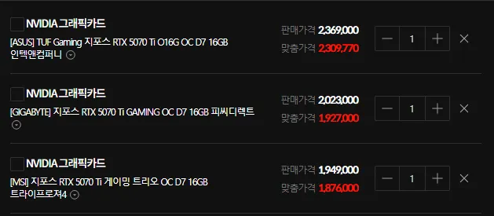
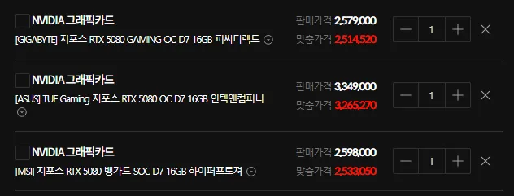
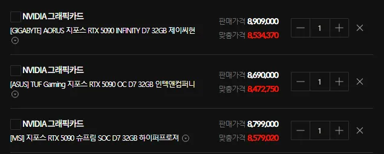
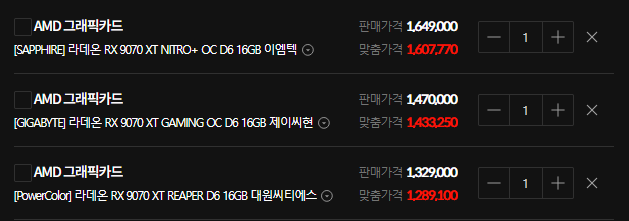

70샤 AIB 3대장 기준 200 근처에서 놀고있고 아수스 TUF는 미쳤고

80 260만원 근처에서 놀고있고 TUF는 여기도 미쳐있고

90은 오히려 10만원빠짐 근데 처오른거에 비해서 10만원빠진걸 빠졌다고해야하나;;;
아는사장님한테 물어보니 ASUS 국내유통사가 재고소진후 입고로해서, 지금 혼자 먼저 입항된가격이라고하네;
한마디로 선반영된 가격이라고 보면될듯함;
<추가>

9070XT도 상급기 기준 150돌파 하급기도 130~140으로 못박히는중
한줄요약 : 승리의 어쩌구단이 문제가아니라 이제 개인PC업자들은 정말 문닫아야할듯. 1년뒤면 괜찮아지려니 했더니 이게뭐야;;;;
갤북3울라리야... 조금만 더 버텨줘라... 할수있지!?